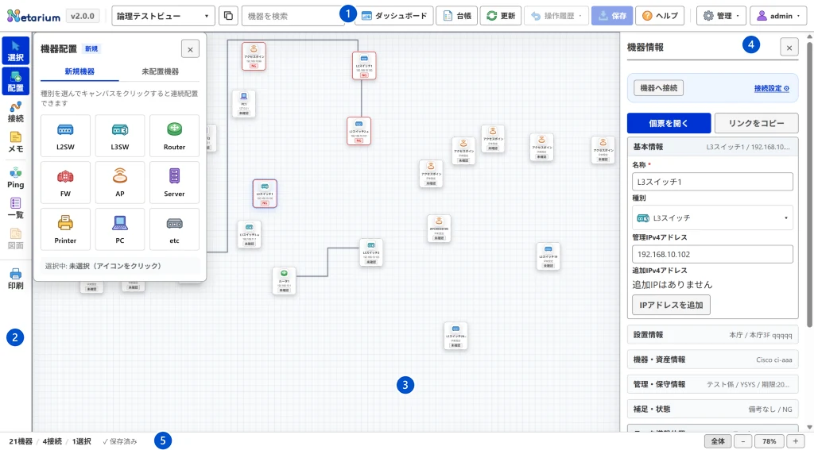

利用ガイド
Netarium（ネタリウム）は、組織内ネットワークの論理構成図・フロア物理配置図・ラック搭載図・機器台帳・ポート接続・Ping疎通結果を一元管理するシステムです。
はじめて使うとき
管理者（構成を登録・編集するとき）
- ビューを開く: 上部バーのビュー検索欄で、論理構成図またはフロア物理配置図を開きます（新規作成は「管理」→「建物・フロア・ビュー管理」）。
- 機器を配置・登録する: 左パレットの「配置」で機器種別を選び、キャンバスをクリックして配置します。機器をクリックして右パネルで名称やIPアドレスを入力し、「適用」を押すと自動保存されます。
- 接続する: 左パレットの「接続」を選び、接続元と接続先の機器をクリックして共通接続を作成します。
ポート・VLAN管理はポート・接続・VLANの管理、一括編集は機器の一括編集、全体集計や入力漏れの確認はダッシュボード・データ品質診断を参照してください。
閲覧者（保存済みの構成を確認するとき）
- 上部バーのビュー検索欄で、論理構成図・フロア物理配置図・ラック搭載図・建物ビューを切り替えます。
- 上部バーの「台帳」から機器一覧の検索・絞り込みや、機器個票（ポート・接続情報を含む）を確認できます。
- 左パレットの「印刷」から、表示中の図面を紙やPDFへ出力できます。建物ビューでは印刷できません。建物ビューを閉じ、印刷する図面を開いてから「印刷」を押してください。
1. 画面構成と5つの領域


| 領域 | 名称 | 役割と主な機能 |
|---|---|---|
| ① | 上部バー | ビュー検索・切り替え、ビューリンクコピー、機器検索、ダッシュボード（管理者）、台帳、更新、元に戻す／やり直す（狭幅時は「操作履歴」、管理者）、保存（管理者）、ヘルプ、管理メニュー、ユーザーメニュー。 |
| ② | 左作業パレット | 作業モード切り替え（選択・配置・接続・メモ）、Ping実行（管理者）、ビュー内一覧（機器／接続、要確認バッジ付き）、印刷。 |
| ③ | 中央Canvas | 構成図・フロア物理配置図・ラックビュー・建物ビューの描画と直接操作。ドラッグでパン、ホイールで拡大縮小、機器のダブルクリックで個票表示。 |
| ④ | 右プロパティパネル | 選択中の機器や接続の明細確認・編集。機器の基本・設置・資産・保守情報、管理接続（HTTP/HTTPS/SSH）、接続のポート・VLAN設定・経路操作を「適用」で確定。 |
| ⑤ | 下部ステータスバー | 機器件数・接続件数・選択件数、保存状態表示（「未確認」時の状態確認ボタン）、処理状況・Ping結果案内、ズーム操作ボタン（全体・縮小・100%・拡大）。 |
2. 機能別利用ガイド
目的の操作に応じた機能別ガイドを参照してください。
構成図の操作 →
キャンバス操作、配置移動の元に戻す／やり直す、共通接続・要確認対応、接続系統、経路調整、メモ、印刷。
機器・台帳の操作 →
機器プロパティ、個票（基本・保守・ポート/VLAN・Config管理）、機器台帳、IPアドレス管理、変更履歴、Ping、一括編集。
建物・ビュー・ラックの操作 →
建物→フロア→ビュー管理、2.5D建物ビュー（フロア間接続・2棟比較）、フロア図面調整、ラック搭載と棚板。
分析・品質管理 →
ダッシュボード（運用状況／資産・保守／ネットワーク／データ品質の4タブ）、データ品質診断と「設定不要」の管理。
保存・管理の操作 →
自動保存と競合対処、CSV取込とバックアップZIPの使い分け、利用者アカウント・パスワード管理。
3. 操作索引・アンカー案内
各機能の詳細項目へ直接移動できる索引です。旧リンク（ブックマークや外部資料）からも該当ページへ自動的に案内されます。
| 機能区分 | 操作項目 | 直接リンク |
|---|---|---|
| 構成図 (`help-canvas.html`) | キャンバス表示・倍率変更 | キャンバスの表示と基本操作 |
| 配置移動の元に戻す／やり直す | 配置移動を元に戻す・やり直す | |
| 作業モード・配置・接続作成・系統 | 作業モードの切り替え / 接続の作成と削除 / 接続系統の管理 | |
| 共有リンク・ビュー内一覧・要確認 | リンクの共有 / ビュー内一覧と一括設定 | |
| 接続線の経路調整・交差見分け | 接続の経路調整 / 重なりと交差の見分け方 | |
| キャンバスメモ・印刷 | キャンバスメモ / 構成図の印刷・PDF出力 | |
| 機器・台帳 (`help-devices.html`) | 機器情報・個票シート・複数IP | 機器情報の編集と登録画像 / 機器個票の編集と複数IP |
| ポート台帳・ポートVLAN・未移行VLAN | 機器個票でポートと接続を管理する | |
| Config保管・差分比較 | 機器Configの手動保管 | |
| 管理接続（HTTP/HTTPS/SSH） | 機器へ管理接続する | |
| 機器台帳・列操作・複数条件絞り込み | 機器台帳の概要 / 台帳の表示項目とセル操作 / 台帳の複数条件による絞り込み | |
| 保守期限の見通し | 保守期限の見通しと台帳への移動 | |
| IPアドレス管理・変更履歴 | IPアドレス管理（ネットワーク区分） / 変更履歴の確認 | |
| Ping疎通確認・一括編集 | チェックした機器のPing / 選択した機器の一括編集 | |
| 建物・ビュー・ラック (`help-views.html`) | 建物・フロア・ビュー管理 | 建物・フロア・ビューの管理と切り替え |
| 2.5D建物ビュー・フロア間接続・2棟比較 | 建物ビュー（2.5D表示・フロア間接続・2棟比較） | |
| フロア図面・ラックビュー・棚板 | フロア図面（下絵画像） / ラックビューと棚板 | |
| 分析・品質 (`help-insights.html`) | ダッシュボード（4タブ・集計基準） | ダッシュボード（4タブ構成と指標） |
| データ品質診断・設定不要 | データ品質診断と「設定不要」 | |
| 保存・管理 (`help-admin.html`) | 自動保存と競合対処 | 変更の保存と競合への対処 |
| CSV・バックアップZIP使い分け | CSVとバックアップZIPの使い分け | |
| 利用者管理・初回パスワード | 利用者管理とパスワード / 仮パスワードで初めてログインする |